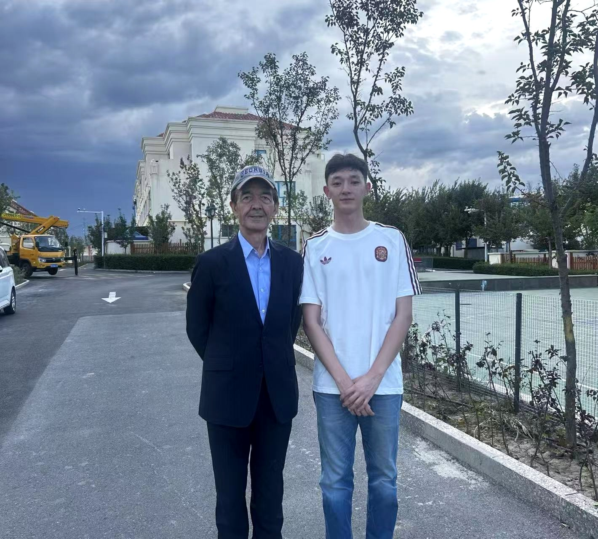

文献与证据
把民族药资料整理成可追溯的研究证据
围绕维吾尔民族药综述、TRACE-EM 和 EthnoEvidence，我将药材、成分、靶点、效应、实验对象与原文位置逐项对应；把文献实验、数据库关联和模型预测分层记录，形成能回查来源的证据表和关系图。
交付内容文献筛选与信息抽取 · 来源定位 · 证据分层 · 缺口清单
SHUKULAN LAB / AI × MEDICINE × RESEARCH
许库兰·阿不都许库尔 中医骨伤科学本科生 · 大二
我是许库兰·阿不都许库尔，来自新疆，现就读于湖北中医药大学中医骨伤科学专业。近三年持续把 AI 用在科研资料整理、证据追踪、数据协作和产品原型上；我的研究主线，是让维吾尔民族药研究中的每条线索都能找到出处、看清证据强弱，并转成团队可以继续推进的工作材料。
A NEW RESEARCH INTERFACE
民族药 × AI × 可追溯证据
明确问题→找文献和数据→用 AI 协助整理→回到来源核对→留下可继续使用的材料
民族药是我的研究特色AI 实践
这些经历来自我正在做的民族药研究、组学分析、医疗产品和网页原型。
围绕维吾尔民族药综述、TRACE-EM 和 EthnoEvidence，我将药材、成分、靶点、效应、实验对象与原文位置逐项对应；把文献实验、数据库关联和模型预测分层记录，形成能回查来源的证据表和关系图。
在乡村 AI 医疗项目中，我从村医记录疼痛病例的真实任务出发，拆出问诊字段、病例录入、页面反馈与人工复核步骤，再用 Codex 迭代交互原型。项目获得大学生创新创业大赛省级奖项。
在胃癌混合代谢组学项目中，我与团队协作整理 R / Python 脚本、差异结果、NMF 模块、分析图表和外部队列验证材料；把输入、处理步骤和图表结果对应起来，便于复核与继续分析。
我用 Codex 拆任务、写页面、调交互、查错并逐轮验收；复杂任务会拆成研究整理、实现、视觉检查和内容复核，再合并修改。本草数字标本馆、康复演示、研究工作台和这份作品集都经历了从构思到可运行原型的迭代。
我把原始文献、数据库关联和计算预测区分开；为候选关系保留来源位置、证据类别和待核查原因。TRACE-EM 一轮内部工作集记录 77 条候选关系，其中 5 条缺少直接证据的候选轴被明确标为“暂不判断”。
我以维吾尔艾特莱斯丝绸纹样为创作基础，使用 AI 辅助探索图案与视觉方案，参与挑战杯项目并获省级奖项；也参与本草数字标本馆的内容组织与网页呈现。
研究方向与论文
我把 AI 用在民族药文献整理、证据追踪和科研数据协作上。
聚焦新疆和田药材与维吾尔民族药资料，结合文献、数据库和研究数据，梳理“药材—制备—成分—靶点—效应”线索，并为每条关系保留来源与证据类别。
用 Codex 和科研工具把检索、证据摘录、候选比较、项目记录和可视化整合进网页原型，让研究过程能接续、能检查。
逐步纳入药材来源与制备条件、化学成分、实验对象和结果，识别证据空缺与可检验假设，为后续实验或数据分析提供优先级线索。
主课题解释
这个课题要解决的是民族药资料来源分散、同一药材在不同制备条件下记载不一、药理线索难以逐条回查的问题。我把药材、制备方式、成分、靶点和效应拆成可核对的关系，记录它来自实验文献、数据库关联还是计算预测；证据不足时保留“暂不判断”，再根据证据强度与缺口安排后续查证顺序。目标是形成一套可追溯、可复核、能持续补充的研究流程，为实验验证和团队协作提供清楚的候选问题。
三项研究写作 / 分析工作均在推进中，具体状态分别标注为写作、分析协作或内部审阅。
这篇综述整理 AI 在维吾尔民族药研究中的应用，重点讨论研究任务、药理证据和实际研究材料如何对应。
民族药 × AI × 证据整合我和协作者正在整理不同制备条件下的复方研究与胃癌细胞状态转录数据。
民族药复方 × 胃癌状态 × 转录组这项方法学稿件在探索如何处理稀疏证据、控制时间信息泄漏，并让靶点排序过程更容易复核。
民族药理 × 方法学 × 可复现研究项目实践与构想 · 15 条记录
左右拖动或点选项目，查看我的具体工作、交付内容与当前进度。这里包含在研课题、网页原型、产品方案和设计实践。
项目详情会说明对应的原型、方案、研究材料和当前进度。
实习方向
我最希望加入 AI 科研或民族药研究团队，也愿意从生命科学数据和医疗 AI 产品工作做起。
我希望做 AI 科研助理或科研工具产品实习，也能参与文献整理、科研流程设计和产品测试。
我已围绕维吾尔民族药开展综述写作、证据台账整理和靶点优先级方法探索，可协助团队处理多来源文献、药材与成分关系、实验依据回查及研究缺口梳理。
参与胃癌混合代谢组学分析，协作维护脚本、差异结果、NMF 模块、图表与外部队列验证材料，能把分析步骤和结果整理成团队可复核的研究记录。
结合中医骨伤学习和乡村医疗项目经验，我能将临床或基层场景拆成使用者任务、信息字段、页面流程和可演示原型，协助团队完成需求讨论与迭代验证。
从 AI 纹样设计、小程序方案到数字本草和科研工作台，我能把开放想法整理成项目结构、页面方案、演示成果和下一轮任务，推动团队从讨论进入可见的原型。
教育与竞赛
我在湖北学习中医骨伤科学，来自新疆，也一直参与民族药与 AI 项目。
在读专业
针灸骨伤学院 · 中医骨伤科学
预科期间以维吾尔传统纹样开展 AI 视觉创新，获挑战杯省级奖项。
2026 年乡村 AI 医疗项目获大学生创新创业大赛省级奖项。
“金种子”国家级立项项目负责人，围绕和田药材与民族医药方向推进项目实践。

新疆背景与研究选择
我来自新疆，维吾尔民族医药文化让我持续关注家乡药材。现在就读于湖北中医药大学针灸骨伤学院，中医骨伤科学专业大二。近三年，我把 AI 用在研究资料检索、结构化整理、证据追踪、数据协作和网页原型中；当前主线是把民族药研究线索整理成可回查、可讨论、可继续验证的材料。
在和田药茶项目交流中，我与中国工程院院士阿吉艾克拜尔·艾萨围绕民族药与 AI 的发展前景交流，我的探索方向获得肯定。父亲在新疆医科大学担任教授；成长背景与医学学习也让我持续关注新疆民族药的研究与转化。
我能帮团队做什么
我来自新疆，负责和田药材相关“金种子”项目，也参与维吾尔民族药文献与证据整理。在 TRACE-EM 一轮内部整理中，我记录了 77 条候选关系，并把其中 5 条缺少直接证据的候选轴标为“暂不判断”，留作后续核查。面对来源分散、药材与实验线索不易对照的问题，我能从资料建档、出处核对、关系整理和检索原型做起，交付团队能继续查、继续改的材料。
汇总药材名称、地方用法、文献出处和研究对象，做成便于检索的资料表。
把实验结果、数据库信息和预测线索分开记录，标明来源和待补材料。
用 Codex 协助制作文献整理、证据查看或研究流程的小型网页原型。
欢迎实习与项目交流
我希望加入 AI 科研或民族药研究团队，参与文献、数据和研究工具相关工作。本科在读期间可实习，优先考虑有薪岗位；远程协作或武汉线下均可。
下载简历 PDF ↗